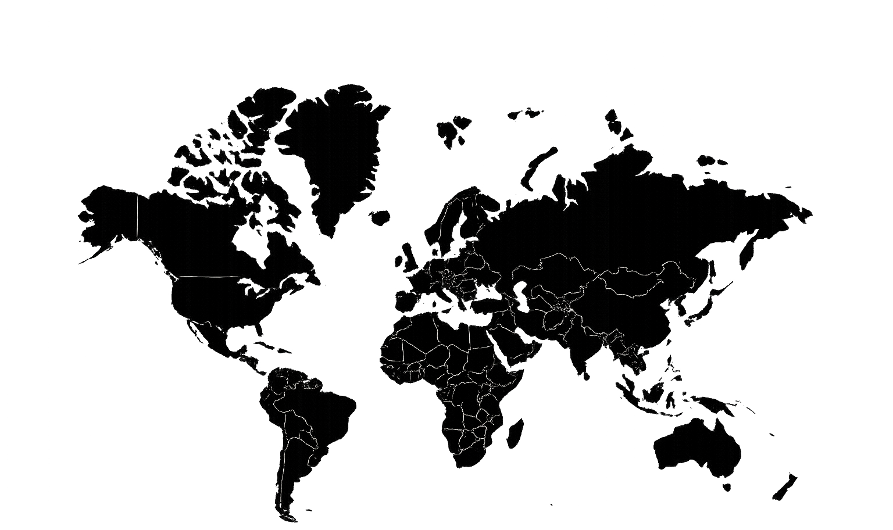
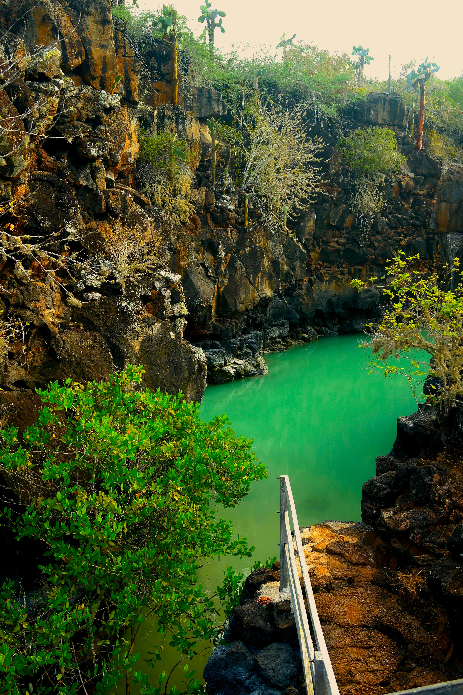
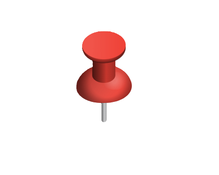
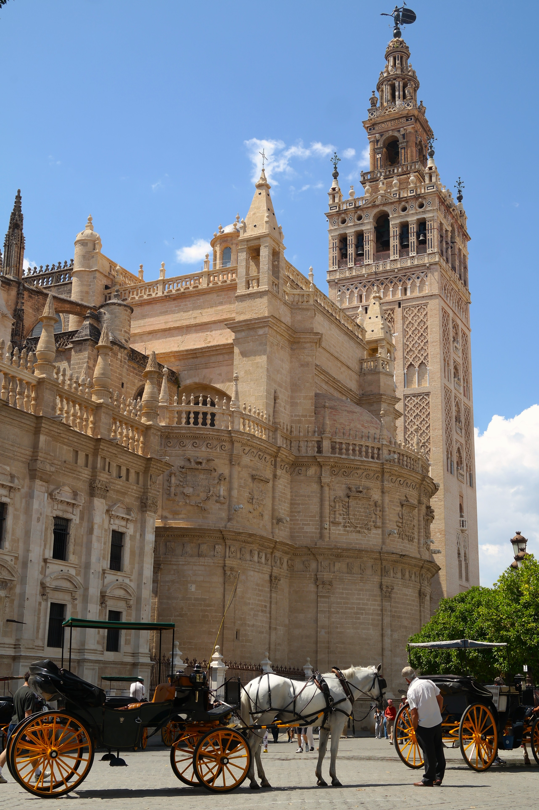
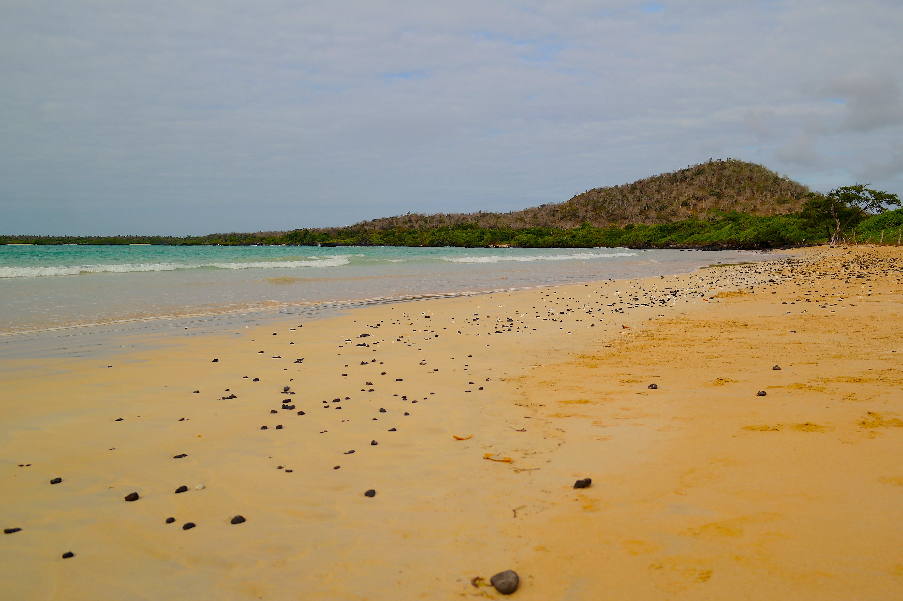
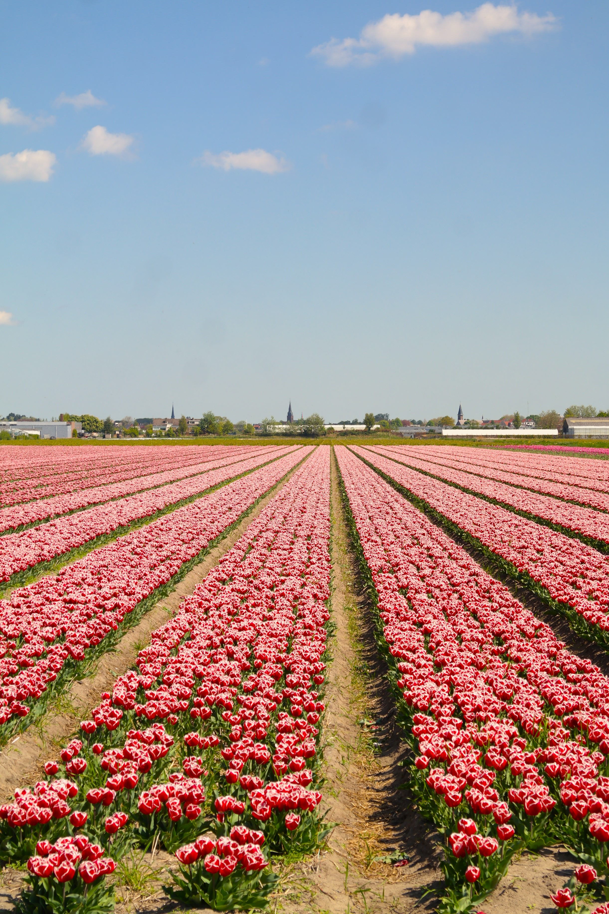
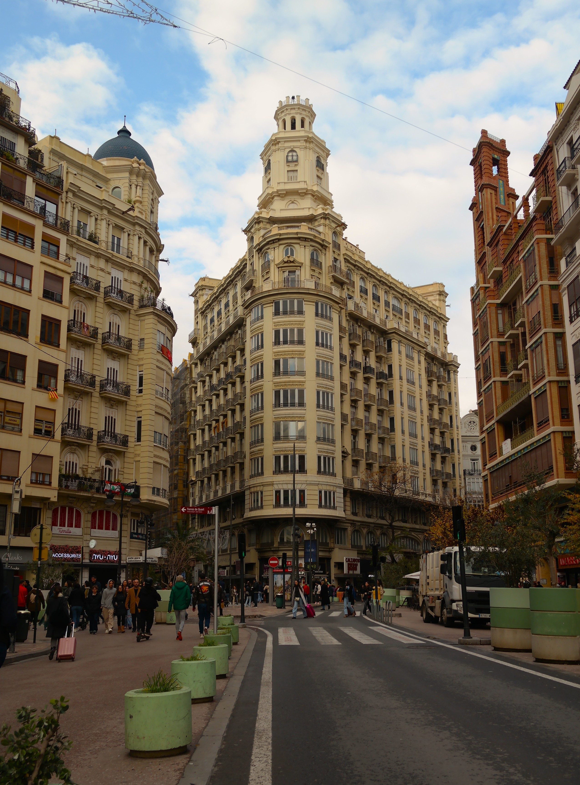
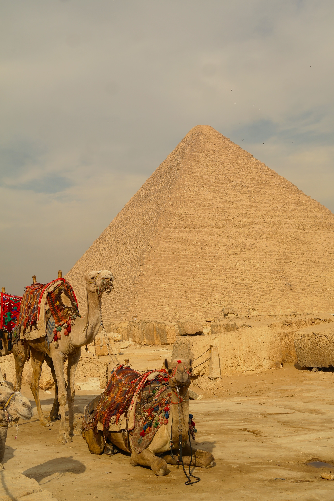

“Viaggiare è la mia più grande passione: amo scoprire nuovi luoghi, immergermi in culture diverse, fare nuove conoscenze e vivere realtà differenti.

Ogni viaggio è un’occasione per crescere, imparare nuove cose su me stessa e vedere il mondo con occhi diversi allargando la mia visione della vita.”

ECUADOR


SIVIGLIA

MADEIRA

GALAPAGOS

AMSTERDAM

VALENCIA

EGITTO
Fotografia
Sono una persona che ama osservare il mondo attraverso i piccoli dettagli, quelli che spesso passano inosservati ma che racchiudono storie, emozioni, momenti di vita quotidiana che solo attraverso la fotografia, nella loro naturalezza e semplicità, riescono a suscitare in ciascuno emozioni diverse.
Penso che la fotografia possa unire le persone, avvicinarle attraverso ciò che provano davanti a un’immagine. Ogni scatto può far rivivere ricordi e sensazioni, anche quando raccontano scene di sconosciuti: attimi che non ci appartengono, ma che sanno toccarci profondamente. Penso che la fotografia possa unire le persone, avvicinarle attraverso ciò che provano davanti a un’immagine. Per me fotografare significa questo: un viaggio intimo, un percorso che passa attraverso lo sguardo ma arriva dentro di te.